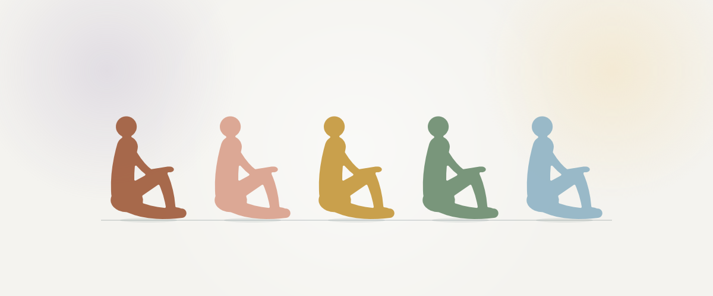

Ciência · Autores
Autores
Os pesquisadores e pensadores que construíram a compreensão de como o que vivemos se expressa no corpo. Cada página traz a trajetória, as ideias centrais, os limites de cada teoria e as referências para ir às fontes.


1856 a 1939 · Psicanálise
Sigmund Freud
A histeria, a quota de afeto e o princípio de nirvana: a pré-história da ideia de um afeto que, sem descarga, se expressa no corpo.
Ler sobre Freud1866 a 1934 · Psicossomática
Georg Groddeck
O analista selvagem que deu nome ao Isso e tratou as doenças do corpo como uma linguagem a ser escutada.
Ler sobre Groddeck
1897 a 1957 · Psicoterapia corporal
Wilhelm Reich
Da análise do caráter à couraça muscular e à vegetoterapia: o primeiro a levar o trabalho clínico para o corpo.
Ler sobre Reich
Nascido em 1943 · Trauma
Bessel van der Kolk
As primeiras imagens do cérebro revivendo um trauma e o livro que popularizou a ideia de que o corpo guarda as marcas.
Ler a síntese sobre Van der Kolk
Neurociência do desenvolvimento
Audrey van der Meer
Com EEG de alta densidade, mostrou como o movimento e a escrita à mão participam do aprender e do lembrar.
Ler a síntese sobre Van der MeerOutros autores aparecem na linha do tempo, com as referências completas. Novas páginas serão acrescentadas aqui aos poucos.